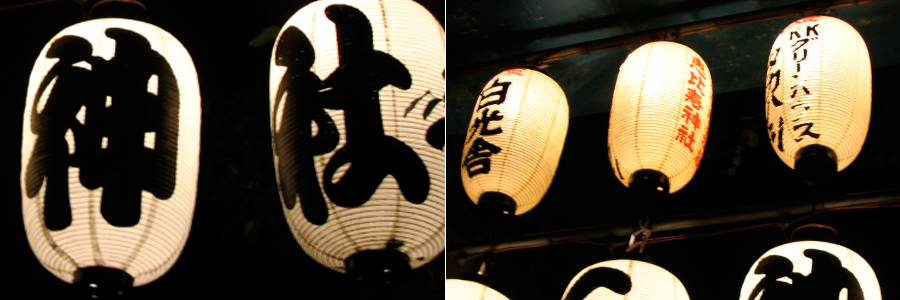

TextFugu Kanji, Part 3
“The words printed here are concepts. You must go through the experiences.” - Carl Frederick

Isn’t that a great quote up above? That’s exactly what we’re trying to do with kanji… turn them into experiences. Other resources have you try to memorize what’s on the paper (or the computer screen). Instead, you should try to experience the kanji in a way that will let you remember them. So, as Carl Frederick says: “The words printed here are concepts. You must go through the experiences.” Let’s go do that!
Just like the previous kanji section, you should go through the following kanji, one by one. Each kanji has its own section with its own narrative that you should read through (and experience!). After you’ve gone through one, you can move on to the next. The order of the kanji below is fairly important, too, so be sure to try and stick with it.
Learning The Kanji
“Here we go!” - Mario
This first set of kanji will be the simplest group of 3-stroke kanji. The meanings will get a little more complicated the farther we go along, but the kanji themselves will always stay just as simple the whole way through (i.e. always be 3 strokes). Go ahead and click on the first kanji to get started!
| Kanji | Meaning | 音 (on) | 訓 (kun) | Strokes | Level |
|---|---|---|---|---|---|
| 三 | three | さん | み, み.つ | 3 | 1 |
| 上 | above | じょう | あが, うえ, のぼ | 3 | 1 |
| 下 | below | か, げ | した, さが, くだ | 3 | 1 |
| 千 | thousand | せん | ち | 3 | 1 |
| 口 | mouth | こう | くち | 3 | 1 |
Kanji Vocab 3.1 ← Import To Your Vocab Deck
Kanji 3.1 ← Import To Your Kanji Meanings Deck
Well done, you’ve made it through the first five kanji. When you feel ready, move on to the next five.
| Kanji | Meaning | 音 (on) | 訓 (kun) | Strokes | Level |
|---|---|---|---|---|---|
| 土 | ground/soil | ど | つち | 3 | 1 |
| 夕 | evening | せき | ゆう | 3 | 1 |
| 大 | large | だい, たい | おお | 3 | 1 |
| 女 | woman | じょ | おんな, め | 3 | 1 |
| 子 | child | し | こ | 3 | 1 |
Kanji Vocab 3.2 ← Import To Your Vocab Deck
Kanji 3.2 ← Import To Your Kanji Meanings Deck
You’re halfway there! Move to the next set when you feel ready.
| Kanji | Meaning | 音 (on) | 訓 (kun) | Strokes | Level |
|---|---|---|---|---|---|
| 小 | small | しょう | ちい.さい, こ | 3 | 1 |
| 山 | mountain | さん | やま | 3 | 1 |
| 川 | river | せん | かわ | 3 | 1 |
| 万 | ten thousand | まん | n/a | 3 | 2 |
| 丸 | circle | がん | まる | 3 | 2 |
Kanji Vocab 3.3 ← Import To Your Vocab Deck
Kanji 3.3 ← Import To Your Kanji Meanings Deck
One more to go. This last set has a few “high level” kanji in it. Really, it shouldn’t faze you. A kid might not know what “deceased” is, but I bet you do already, right? After you’re done with this one, you can begin reviewing them, then learn the common words associated with them!
| Kanji | Meaning | 音 (on) | 訓 (kun) | Strokes | Level |
|---|---|---|---|---|---|
| 工 | industry | こう | n/a | 3 | 2 |
| 才 | genius | さい | n/a | 3 | 2 |
| 久 | long time | n/a | ひさ.しい | 3 | 5 |
| 亡 | deceased | ぼう | な.い | 3 | 6 |
| 寸 | measurement | すん | n/a | 3 | 6 |
Kanji Vocab 3.4 ← Import To Your Vocab Deck
Kanji 3.4 ← Import To Your Kanji Meanings Deck
Now that you’ve finished all the 3-stroke kanji, and looked at all the 3-stroke vocab, it’s time to circle back around and solidify your knowledge. Go through and review your Kanji and Kanji Vocab decks in Anki.
With the kanji deck, you’ll want to try and rememebr the stories that go along with each kanji. If you do it enough, you’ll gradually come to a point where the kanji and the meaning come more quickly, and you no longer need to use the story (it’ll become automatic!).
With the kanji vocab deck, as you go through the vocab on the kanji narratives, you’ll want to use the meanings of the kanji you’ve been learning to create mnemonics of your own. Luckily, this will be very easy because of the meanings of the individual kanji. For example, 一人 consists of the kanji 一 (one) and 人 (person). Thus, you have “one person” which is the meaning of this vocab word. Easy, right? Just try to learn the meanings of the vocab words as you go through the kanji narratives. If you do, the kanji vocab should be fairly easy. Not super easy, but easier than if you’re not learning the meanings while you go along (it’s also important you learn the meanings of the individual kanji, as well!).
When you’ve gone through and reviewed your kanji vocab and kanji deck, you can move on to the next set of radicals!
Before You move On:
- Make sure you know the meanings of the above kanji
- Make sure you can recall the on’yomi for all (if not most) of the above kanji
- Make sure you know the green common vocab words in the kanji pages above.
- Take a break! That was a lot of kanji and vocab!